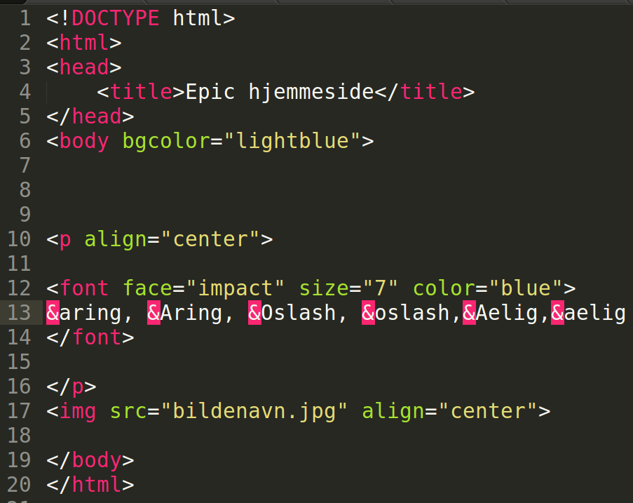

- For å få chrome og de andre nettleserne til å forstå at vi skal bruke norske (og andre spesielle) bokstaver, må vi bruke en spesiell kode
F.eks; for å skrive å må vi skrive aring med &-tegn foran, sånn som bildet under.

- Dette gir resultatet som i bildet under
- Skjønte du det?? Grønn skrives faktisk grønn i koden!!
- Her er andre koder som du kan bruke hvis du trenger eller har lyst på
- Lagre dokumentet , og oppdater hjemmesiden din i nettleseren for å se resultatet. Oppdatere gjør du ved å trykke F5 eller ↻